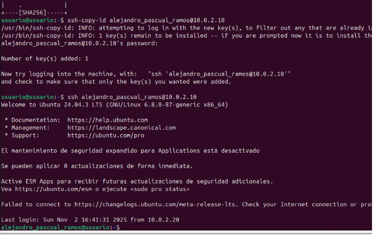
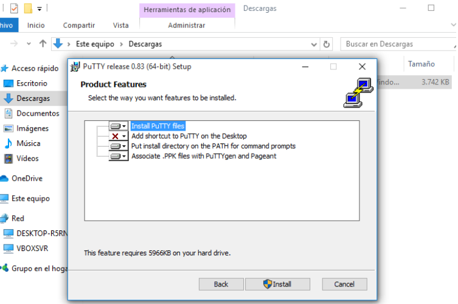
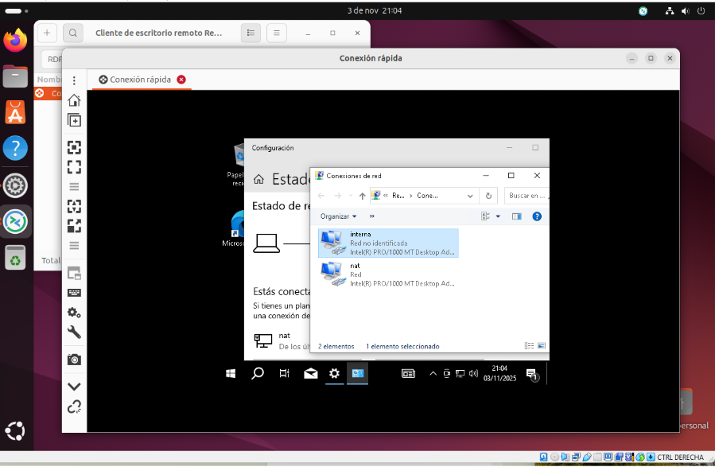
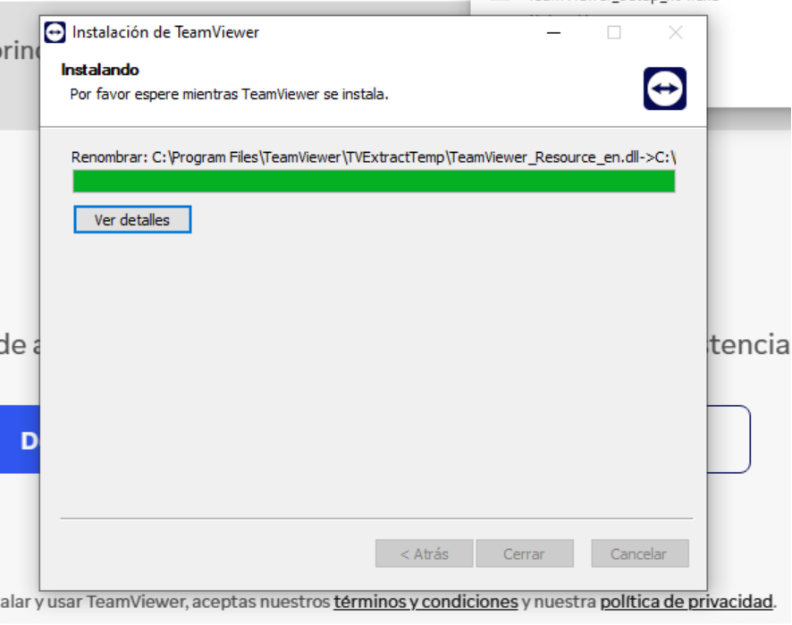
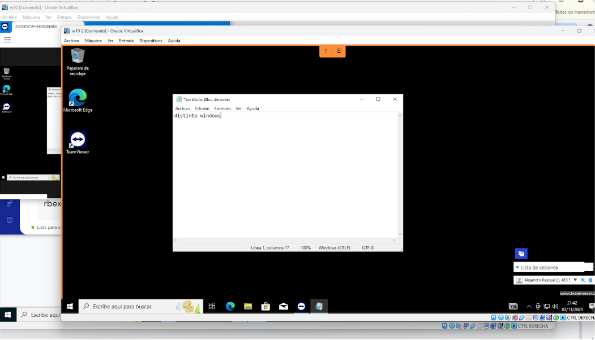
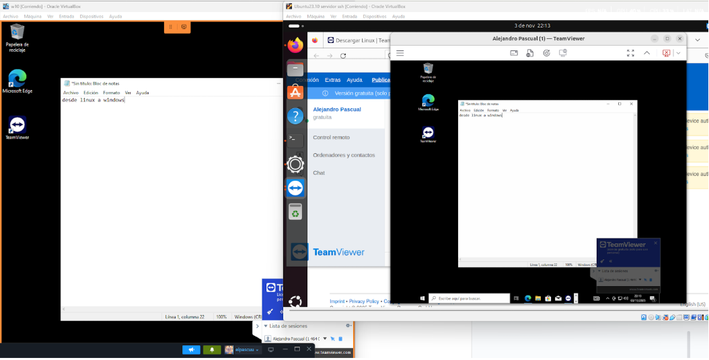
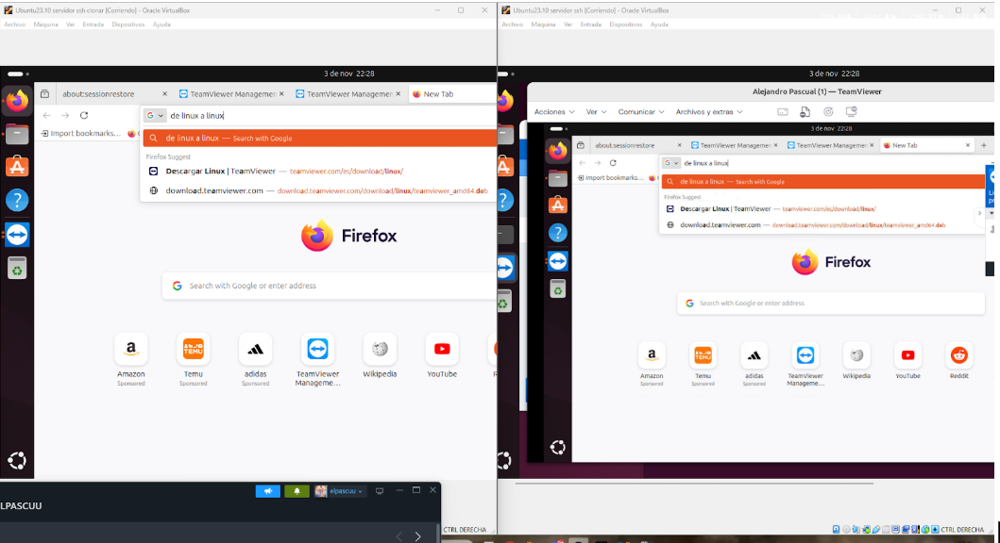
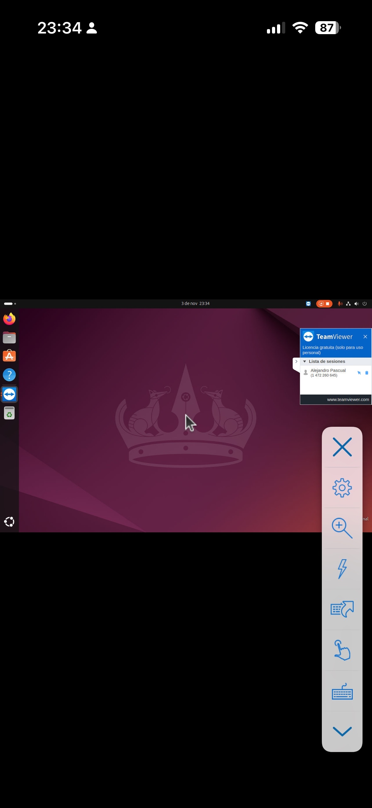

Práctica Terminales - Capturas de ejercicios
Bienvenido/a. Abajo tienes todas las capturas para la práctica de terminales, ordenadas según los pasos del ejercicio.
Añade aquí explicaciones, comentarios o instrucciones.
1. Descargar OpenSSH

2. SSH desde otro Linux

3. Entrar sin contraseña

4. Instalación Putty

5. Conexión Putty

6. Conexión Remmina

7. Configuración Remmina

8. Escritorio remoto contraseña

9. Escritorio remoto Windows

10. Instalación TeamViewer

11. Windows a Windows

12. Windows a Linux

13. Linux a Windows

14. Linux a Linux

15. Teléfono a Linux

16. Teléfono a Windows